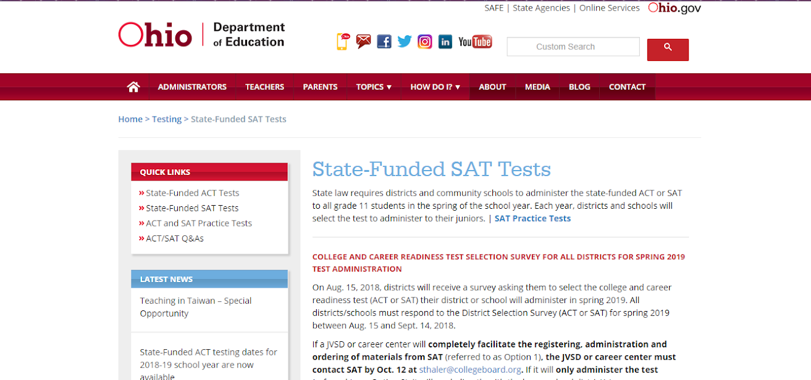
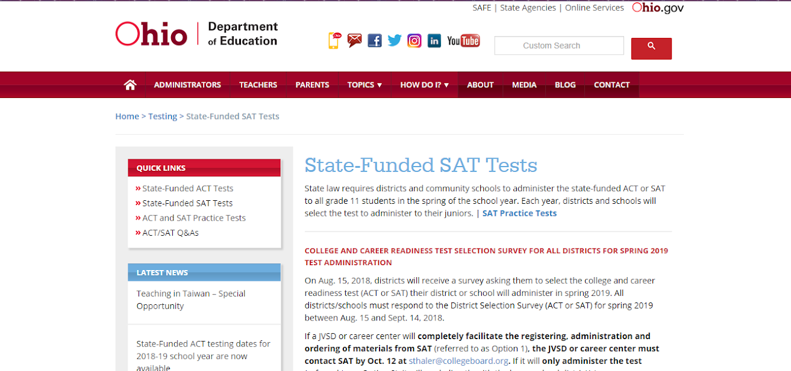

ACT and SAT Prep since 2013
We have a successful test preparation program with some of the highest average improvements in the tri-state.
All of our tutors are also certified teachers who have experience and training geared for college test preparation.
Our programs focus on individualizing the test prep and tutoring around the individual needs of the learner. Students are assessed before a recommendation is made and a Student Learning Program is created along with the parent/guardian.
Beyond ACT and SAT testing preparatory programs we also offer tutoring programs for middle and high school students in a variety of subjects. Click About Us to learn more
We look forward to hearing from you, click Contact Us to find out out more
 
